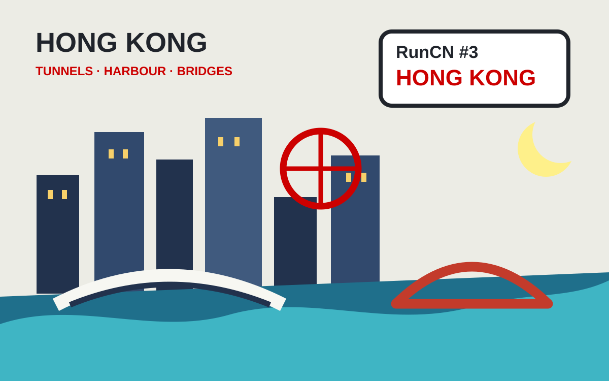

Run50 Stories
English Stories
Race stories translated with a more conversational voice, keeping the travel notes, food detours, and finish-line messiness intact.
Xiangyang Marathon: from Luojia Mountain to the Han River
First marathon back in China after almost six years, with Wuhan rain, Xiangyang beef noodles, old city walls, and a surprise 3:57.
Guilin Marathon: heat, karst hills, and family at the finish
A hot run along the Li River and through Guilin's mountain-lined streets, with my parents and aunt waiting at the finish.

Hong Kong Streetathon: tunnels, bridges, and a 5 a.m. start
A race through expressway tunnels, elevated roads, Victoria Harbour wind, Tseung Kwan O Bridge, and the final stop of a long China trip.